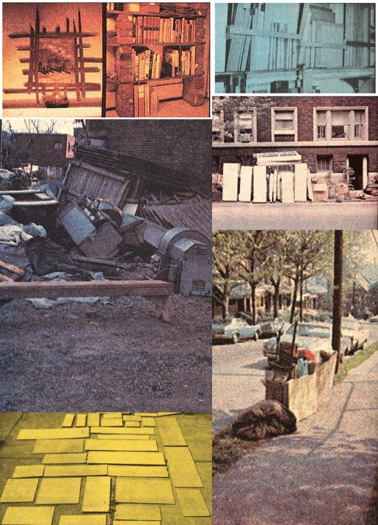

I used to be frustrated by craft magazine articles which began, "Here's a great little project that you can build from the scraps you have around your shop." Because I never could afford enough shop materials to build my main projects let alone have scraps left over for every small one evening job I wanted to do.
But that's all in the past now. My poverty stricken days (at least as far as shop materials go) are behind me. In fact, I've become embarrassingly wealthy in 2 X 4's, odd sheets of plywood, lengths of molding, one inch thick solid walnut boards, and other delicious lumber and hardware since I learned to scrounge.
That's right. Scrounge.
No, I don't mean steal! Scrounging, first and foremost, isn't stealing. Not the way I do it. It's recycling: the gathering up and the putting to use of materials that others don't want. Materials, to state it bluntly, that others are glad to get rid of. So glad that I'm usually encouraged to haul away everything I want at very little charge and, frequently, at no charge at all.
Not only is this financially advantageous to me, it's sound ecological practice for the planet as well. One small example: This country throws away, burns, or otherwise destroys hundreds of millions of board feet of usable lumber every year. Why shouldn't you or I recycle some of that total for our own purposes thereby simultaneously lessening our disposal problem and cutting our personal demand for new materials?
"And where," you may ask, "is this abundance hidden?"
"All around you," I reply. "Most often in buildings awaiting demolition."
Today, you see, because of labor costs and tight deadlines, wrecking contractors seldom take the time to actually dismantle old structures. Instead, they just bring in the bulldozers and trucks, smash the doomed homes, offices, and apartments to bits and cart all that valuable material away as quickly as possible.
Well, I for one consider this to be a destructive, senseless waste. So I now keep my eyes peeled for signs of urban renewal or redevelopment (or just plain old house wrecking) whenever I'm running errands around town. I also watch the newspaper for bid advertisements or notices of demolition. (Announcements of pending new construction on already improved property are good too because, before the new structures can go up, the old ones have to come down.)
Anyhow, once I've located a likely scrounging ground, I go to the supervisor on the job and ask his permission to haul old materials away. He generally tells me to go ahead. Or, sometimes, he'll ask for a "hunting fee" (my term for any payment I have to make to obtain the scrounging rights I want).
Now I figure that I can and should haggle whenever I'm asked to fork over cash for permission to pick through old lumber, paneling, etc., that's already bound for the city dump. (it's a moot question, anyway, whether or not such money ever gets back to the firm doing the demolition.) So I drive a hard bargain on the deal even though I don't mind laying out a little for my scrounging rights (since, at least in the mind of the project's straw boss, I've just 'legitimately bought permission to drag away as much of the old building as I want).
For instance, the last time I did this, I paid exactly $3.00 for unlimited rights to salvage anything I chose from a two story frame house. I went in with a claw hammer and came out with about 40 feet of 1 X 12 pine shelving, a large semi-circular oak stairway, assorted 1 X 2's, 2 X 4's, and 1 X 6's. (My hammer, though, didn't survive prying out those stairs. Save your pennies for a wrecking bar. It cuts down the wear and tear on hammers and allows you to pull out whole planks without splintering or scarring them.)
From the pine, I made custom shelves for myself and for a friend. The stairs will eventually be transformed into a coffee table, and the remaining wood will become the formerly hard to find "scraps around the shop".
Just try purchasing that much lumber down at the local yard for $3.00. You won't even get past the office! Oh, I'll admit that what I salvaged isn't brand new or clean or cabinet quality. Some of it's even cupped and warped. So what else can I tell you? Commercial lumber isn't exactly perfect these days either. In fact, my wood is at least well seasoned an apparently unguaranteed quality of any timbers currently offered by most lumberyards.
Besides, I'm not a cabinetmaker and wouldn't know what to do with really fine quality wood anyway. I'm just looking for shelving and furniture material at the lowest possible price preferably nothing! I can find.
Of course, if I had wanted superior grades and varieties of lumber, I could have gotten them on that very job. While pulling out what I did take I saw solid cherry, one inch thick, tongue and groove paneling (worth many dollars!) running halfway up the wall in one room beautiful quarter sawn oak flooring huge exposed ceiling beams mahogany cabinet doors, and I think you get the idea. Unfortunately, however, I live in an apartment that features limited storage space so I could only drag home what I had reasonable possibilities of using in the very near future. Still, when I think of that cherry going under the bulldozer's blade.
My second favorite scrounging grounds are the advertising display houses here in Pittsburgh. These companies build booths and signs for trade shows and fairs and permanent exhibits which are installed in airports, hotels, and convention halls. The firms are listed in the Yellow Pages under "Advertising, Display" and I find them to be good sources of new plywood, fiberglass, plastics, and other such materials.
There's one thing for sure about the type of advertising exhibits, signs, etc., that these companies put together: They're all made from absolutely first class, brand new materials. Which means that the leftovers and scraps from such work are likewise new and of superior grade. On my last junket to a display shop I came home with pieces of birch and mahogany plywood, several 1 X 2's and 2 X 2's, assorted clear pine boards and two 8 X 3 foot pieces of 5/8 inch Homosite (which made fine bulletin boards).
In addition, I scrounged several plastic signs and painted sections of hardboard from old and junked booths on that same trip.
No, most of what I toted back to the apartment from the display shop wasn't in what you'd call "large pieces" but they were plenty big enough for framing pictures, making small desk cubicles, and turning into cat doors and planter boxes.
Best of all, my advertising "outlets" never bother me with a hunting fee. Disposal of the odds and ends 1 want from these shops is generally handled by a janitor who's only too happy to get them off his hands. One of these guys even told me to call him in advance the next time I expected to be around and he'd have enough stuff ready for me to fill a truck!.
Yet another dividend offered by these display shops is the sizable amounts of sawdust they produce along with their scraps. The dust makes excellent mulch and compost since it comes almost entirely from hardwoods, instead of resinous pines and other softwoods.
Naturally, a real scrounger like me doesn't just hang around demolition sites and display shops looking for old and new lumber. Nosiree. I long ago learned to cruise the streets immediately ahead of the annual municipal pickup of articles too large for the regular daily or weekly refuse collection.
My, my. What a boggling amount and variety of goods gets thrown out as "junk" during this yearly event! If you're not too proud to search and you look long enough, you can find most anything you want. I recently picked up (at this curb service!) a nice dining room table with leaves that's so good I plan to use it in my own dining room. And it was free! Not to mention the refrigerators (convertible to meat and fish smokers), stoves (burners for home kilns), and washing machines (with their motors and wonderful spare parts) I could have picked and chosen from.
Why, I was so inspired by the wealth of those curb side treasures, that I'm even going to tell you about one final grand source of lumber which 1 tap from time to time: the disposal areas of companies dealing in electronic equipment, small machinery, or any other product that requires protective wooden crating.
These shipping containers, while unfinished, are both strong and light. When painted (but left unsanded), they can be used as prefabbed stackable modular shelving or cabinets with an antique touch. A couple I know has assembled such crates into a housing for their TV, bar, books, and bric-a-brac. Any time they want to, they can rearrange the units as they desire and perhaps even more importantly the whole "wall" can be painlessly given away or reconsigned to the trash when they move or find better replacements.
The above recycling ideas, of course, by no means exhaust the possibilities that await you in every city, town, and rural area of the country. I'm sure that no matter where you live you have at least one even better potential source of usable materials, tools, equipment, etc., right in your own backyard.
So open your eyes. Look around. Think of all that valuable stuff just waiting to be picked up. Think of all the money you can save. Think of the small bit you'll be doing to solve this nation's disposal problem. We need you! So get permission when necessary but get out there right now! and start your own grassroots recycling program.
THINK SCROUNGE!
|
 |
|
|